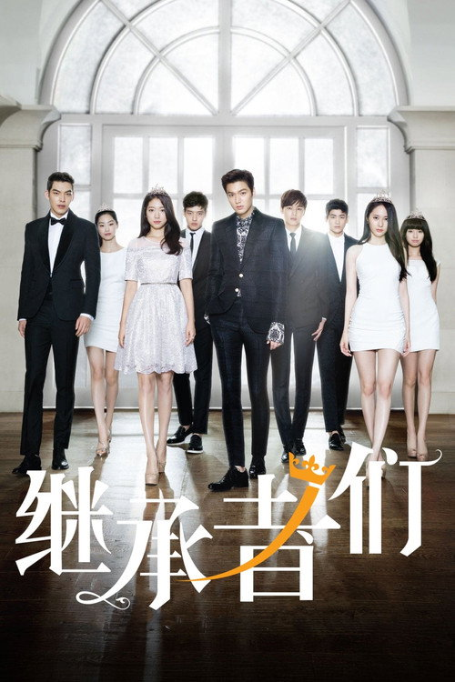
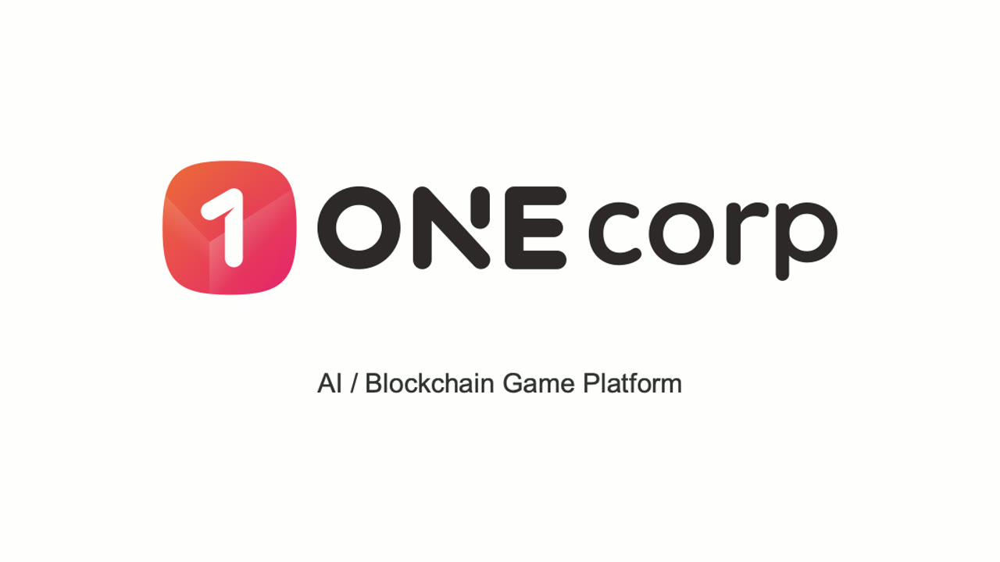
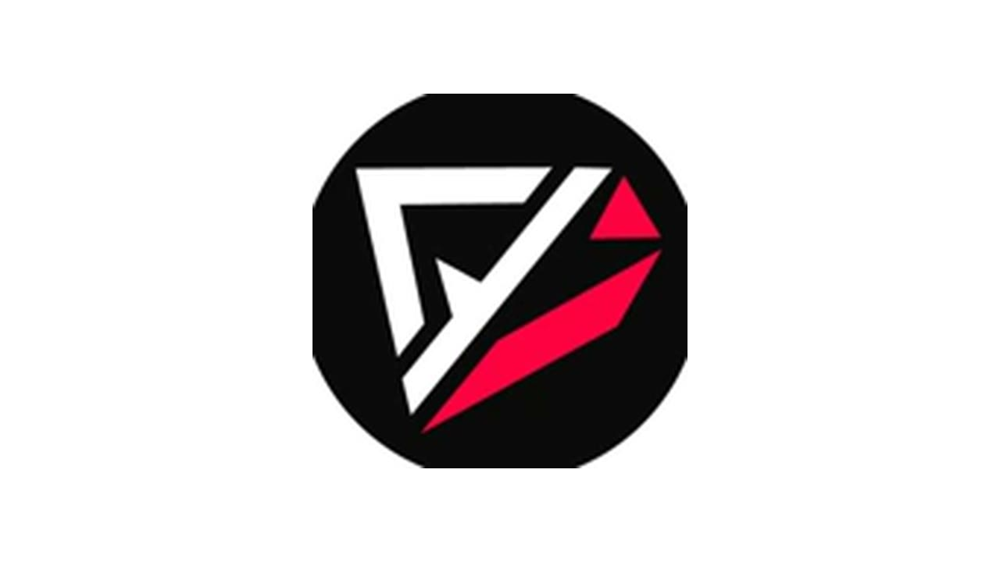
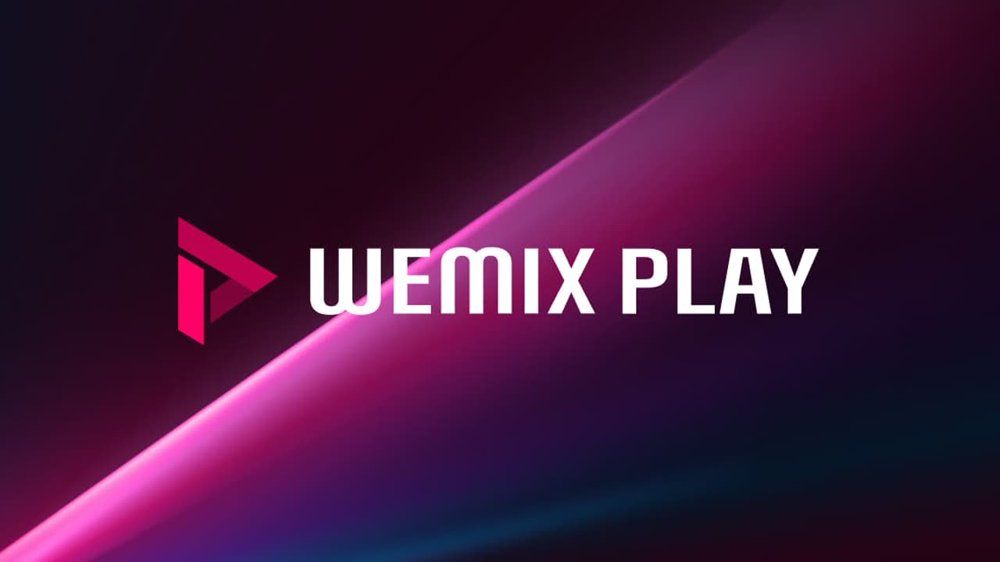

剧集 · 2023

《车贞淑医生》
做了二十年家庭主妇的车贞淑，肝病痊愈后重拾行医执照，以一年级住院医师的身份回到丈夫所在的医院。2023 年 JTBC 医疗剧，严正花、金炳哲主演。
中国香港地区：通过此链接开通（邀请码 5rfpUarUEd）
到 Netflix 搜索片名观看 · 请支持正版
本站不提供、也不链接盗版资源。
THE SHARE
v.douyin.com/ETkls6EwUXo/
它没有聊舞台，也没有聊新专，只聊猫。一句不算工整的话，却把喜欢这件事拽回了地面。
我们听哈韩的歌、追哈韩的剧，偶尔也会被问一句：「你到底喜欢它什么？」大多数时候笑着就混过去了。但这一次，我想认真回答。
所以有了这一页：不是辩护词，也不是推介页，只是把「理由」两个字，摊开写清楚。
注：本站是个人观点页，不引用未经核实的数据，也不代表任何机构。
FOUR REASONS
KINDNESS LIVES IN DETAILS
一个不起眼的猫碗、一只没被清走的纸箱、冬天没有被撤掉的小屋。让人心里一软的从来不是宏大的口号，是有人愿意为不会说谢谢的生命，弯一次腰。
我喜欢看见这种弯腰。
HOW IT TREATS THE SMALLEST
楼可以很高，灯可以很亮。但我更在意：不会说话、没法回报、也提不出要求的那一个，有没有被算进这座城市的考虑里。
猫是一把很轻的尺，却称得出很重的东西。
LIKING IS NOT A FREE PASS
喜欢一个地方，不等于替它的一切辩护，也不等于把它想象成完美。任何地方都有复杂的一面，把它当成一个真实的国家、而不是一张精修图，才谈得上喜欢。
喜欢具体的、值得喜欢的瞬间，同时保留自己的判断——这才叫「有理由」。
BRING IT HOME
如果这份触动只停在屏幕里，它就太轻了。被打动之后，人会想在自己楼下也做一点小事：一碗干净的水、不随意弃养、领养代替购买、冬天给纸箱垫一层旧毛衣。
喜欢最好的样子，是它让你也变温柔一点。
A SMALL THING
善意不必是很大的事。
有时只是有人记得，天黑了要给谁留一点光。
这盏灯，你已经亮过 0 次。
数字只存在你自己的浏览器里，不会上传、不联网、也不代表任何人。它只是提醒你：可以从很小的地方开始。
FURTHER READING
以上均为公开可访问的页面，仅作延伸阅读。本站不对其中的事实、数据与时效性作核查或背书，也不据此作任何断言。
CURATED BY THE WEBMASTER
看韩剧
剧集 · 2023
做了二十年家庭主妇的车贞淑，肝病痊愈后重拾行医执照，以一年级住院医师的身份回到丈夫所在的医院。2023 年 JTBC 医疗剧，严正花、金炳哲主演。
到 Netflix 搜索片名观看 · 请支持正版
本站不提供、也不链接盗版资源。
电影与剧集

文姬奶奶患有阿尔茨海默症，却是孙女车祸唯一的目击者。她对抗遗忘，和儿子一起追查肇事逃逸者。2020 年的韩国电影，笑和眼泪都落在一个老人身上。
到 Netflix 搜索片名观看 · 请支持正版
本站不提供、也不链接盗版资源。
剧集 · 2015
名门高中的舞蹈社与精英白虎社被迫合并成拉拉队，少年少女在冲突里成长、相爱。2015 年 KBS 月火剧，郑恩地、李源根主演。
到 Netflix 搜索片名观看 · 请支持正版
本站不提供、也不链接盗版资源。
剧集 · 2013

四百年前落到朝鲜的外星人，以大学教授都敏俊的身份生活至今，与韩流明星千颂伊谱写跨星际的爱恋。2013 年 SBS 水木剧，金秀贤、全智贤主演。
到 Netflix 搜索片名观看 · 请支持正版
本站不提供、也不链接盗版资源。
剧集 · 2013

贫穷却骄傲的车恩尚，与美国归来的帝国集团继承人金叹在高中重逢，少年们被迫掂量王冠的重量。2013 年 SBS 水木剧，李敏镐、朴信惠主演。
到 Netflix 搜索片名观看 · 请支持正版
本站不提供、也不链接盗版资源。
剧集 · 2003

宫女长今凭厨艺与医术冲破身份偏见，最终成为国王的首位女御医。2003 年 MBC 古装剧，李英爱、池珍熙主演，曾在多国播出。
到 Netflix 搜索片名观看 · 请支持正版
本站不提供、也不链接盗版资源。
听K-pop
韩国音乐 · 2013

新沙洞老虎操刀、任昌丁和金昌烈合唱的洗脑神曲，金希澈、U-KISS、金秀路等几十位明星客串出镜，简单的舞步让人不知不觉跟着摇摆。2013 年发行，被称为「超越《江南 Style》的神曲」。
MV 仅在大陆可看；其他地区请用 YouTube 通道（见下方红字）。
中国大陆以外的观众，请在 YouTube 搜索歌名「请开门（문을 여시오）」观看 MV。
K-POP 平台
韩国 K-POP 媒体平台，拥有 YouTube、X、Instagram、Facebook 等全平台 3500 万订阅者。提供 K-POP 明星的 LIVE 表演、舞蹈视频、综艺节目和采访内容，支持中文、日文、英文、韩文四种语言。
1theK 是韩国本土平台，无需翻墙，四语界面可直接切换。
端游
韩国 · Neowiz · 2023

Neowiz 开发的类魂动作 RPG，以匹诺曹童话为蓝本重构黑暗奇幻世界。精美的哥特美术风格与扎实的战斗手感，被誉为韩国 3A 游戏的里程碑之作。
Lies of P 已登陆 Steam、PlayStation、Xbox 等平台，支持中文界面与字幕。
韩国 · Shift Up · 2024

Shift Up 开发、索尼发行的动作冒险游戏。玩家扮演伊芙，在被外星生物入侵的后末日地球上展开战斗与探索，以华丽的动作设计和角色建模著称。
剑星最初为 PlayStation 独占，2024 年已登陆 Steam 平台，支持中文界面。
韩国 · Krafton · 2017

Krafton 旗下 Bluehole 开发的大逃杀射击游戏，开创了现代战术竞技品类。百人空降、缩圈对抗的玩法风靡全球，累计玩家数超过 7500 万。
PUBG 已转为免费游戏，支持 Steam 和主机平台，中文界面完善。
韩国 · Nimble Neuron · 2020

Nimble Neuron 开发的多人在线战术竞技游戏，融合 MOBA 与大逃杀元素。动漫风格角色设计，强调装备合成与操作技巧的深度对抗。
永恒轮回为免费游戏，支持 Steam 平台，提供完整中文界面。
手游
韩国 · NEOWIZ · 2023

NEOWIZ 推出的冒险 RPG 手游，以主机级 2D 画风和 Live 2D 角色动画为特色。3×4 格回合制布阵战斗，支持横竖屏自由切换，角色与剧情广受好评。国际服支持繁体中文。
注意：棕色尘埃2 是 2023 年推出的正统续作，与旧作《棕色尘埃》（国际版名 Brave Nine）并非同一款游戏。可在 App Store、Google Play 和 QooApp 下载。
韩国 · SHIFT UP · 2022

SHIFT UP 开发、Level Infinite 发行的美少女射击 RPG 手游。以顶级作画技术和超愉悦战术体验为特色，支持韩/英/日/繁中/简中/德/泰多语言，主剧情提供韩/日/英三语配音。
NIKKE 支持多语言界面和配音，可在 App Store、Google Play 和 QooApp 下载。
链游平台
以下推荐以平台 / 工作室官网为主，链游涉及虚拟资产，请自行判断风险。
风险提示：区块链项目与虚拟资产价格波动剧烈，投入前请先确认自己能够承受相应损失，按自身财力谨慎参与。
韩国 · NEXUS / ONE · 2015

由 KOSDAQ 上市厂商 NEXUS 打造的 AI + 区块链游戏平台，Cross 游戏链已更名 ONEchain，并收购韩国应用商店 ONE Store。旗下有 Seal M、ROHAN2、ROM: Golden Age 等链游，是 WEMIX 之外韩国最活跃的游戏链生态。
平台型推荐，不含具体游戏；涉及虚拟资产，请自行判断风险。
韩国 · Catze Labs · 2021

由 Catze Labs 打造的跨链 P2E 游戏平台，代表作是赛博朋克大逃杀《Trouble Punk: Cyber Galz》与《Dungeon Rogue》，采用 $ESPORTS / $TROB 双代币体系，并获 Consensys、Linea、Oasys 等生态支持。
平台型推荐；原 yooldo.gg 域名已失效，现以 app.yooldo.pro 为入口。涉及虚拟资产，请自行判断风险。
韩国 · WEMADE · 2019

WEMADE 旗下的区块链游戏平台，旗下有《奇迹 MU：MIR4》《夜鸦》等作品。平台提供钱包、游戏代币与 NFT 交易，是韩国最具代表性的链游生态之一。
平台型推荐，不含具体游戏；涉及虚拟资产，请自行判断风险。
韩国 · Nexon / NEXPACE · 2025

Nexon 授权、NEXPACE 运营的《冒险岛》IP 区块链生态，核心游戏《MapleStory N》为 PC MMORPG，采用 NXPC / NESO 双代币体系与 NFT 道具，支持多语言（含简体中文）。
平台型推荐，不含具体游戏；涉及虚拟资产，请自行判断风险。
韩国 · Planetarium Labs · 2019

韩国技术派 Web3 游戏工作室，代表作有全链 MMORPG《Nine Chronicles》、韩国 App Store 登顶的《Immortal Rising 2》，以及 AI 造游戏平台 Verse8。以自研链上引擎与可验证游戏逻辑见长。
工作室官网推荐，含具体游戏；涉及虚拟资产，请自行判断风险。
敬请期待 · 持续扩充中
这一格留给还在考察中的链游项目。链游生态变化很快：有的项目停运，有的转做支付基建，有的因为地区法规调整了服务范围。本站会持续跟踪仍在运营、有明确官网入口的项目，逐一核实之后再补进来——从公链平台到游戏工作室，宁可慢一点，也不挂死链和空壳。
站长推荐，内容由 AI 生成
加速器
以下福利口令为站长自用分享，兑换规则与时效以各加速器官方为准。
工具 · 外星仔 · 免费加速器

坚持基础功能永久免费的 PC 游戏加速器，覆盖 Steam 等主流平台的联机加速，节点可随时暂停、时长可累积。送站长一张「50 小时萌新卡」：打开外星仔加速器 PC 端活动页，登录后在兑换入口输入专属口令 574567。
口令 574567 兑换 50 小时加速时长；每个账号的领取规则与有效期以客户端实际显示为准。
工具 · 给梨 · 电竞级专线
KEEPSAKE · 存档
这张网页截图是站长给 AI 的，那一页现在怎么搜也搜不到了。它不属于上面任何一条理由，也不是要替谁下结论——只是不想让一个具体的瞬间被时间冲掉。所以放在这里，当作附页。
这张图能确认的，只有它拍到的那一屏。同题的公开报道曾在几处留有存档，链接与当前可访问状态都附在本页；本站不核实其中细节、不为其表述背书、也不代表任何立场，它更不是上面四条理由的论据。记得一件事，不等于替它下结论。
不想遗忘，有时只是把一张纸压平、放进书里。
同题公开报道存档 · 外部链接
2026-11-13 核查：人民网与山西新闻网两条外链均已失效（返回 404），只有凤凰网仍可正常阅读。链接状态随时会变，此处只记录本次核查；前两条已失效的外链统一指向本页（a-reason-for-korea）留存。